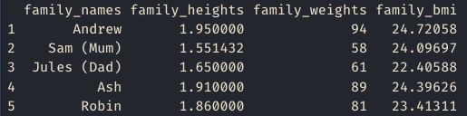
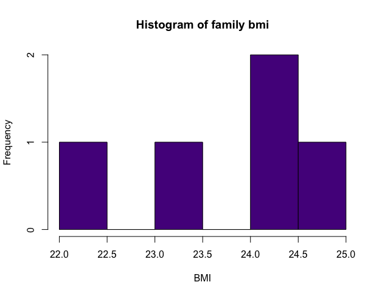

10 * 5[1] 50In this worksheet we are going to take a short tour of key data types in R:
Our project for this worksheet is to do some simple health metric analysis. By the end of this worksheet you should have the outputs shown below, and a .csv file with your data you made.
 
 
We will go through several steps to build up to this!
To get started you will need to follow the below steps:
Open RStudio.
Download the R script provided, which provides you with some structure. You can also use a R Markdown file if you prefer, which can be downloaded from the second button.
Make a new folder on your computer and give it a meaningful name. Put your downloaded file in that new folder.
Open the R Script R_dissertation_1.R or R_dissertation_1.Rmd file you downloaded.
For help getting started using RStudio and either script or R Markdown files, we have written a guide to help you out.
Each section is a small project. You will need to write all the code yourself.
You’ve started a health kick after watching some inspirational videos online. They suggested a good first step is to keep track of your health metrics via BMI and waist to hip ratio calculations. As you are learning R, it seems like a good place to start.
R is an excellent calculator. See the example where we work out 10 times 5.
10 * 5[1] 50You can find the formula for BMI on the British Heart Foundation website.
The waist-to-hip ratio metric is another measure of health that is designed to look for people at higher risk of conditions like heart disease or type 2 diabetes.
If you don’t know what your metrics are, try using the data for Andrew:
Using the data for Andrew you should get the outputs of:
BMI: 24.7205786
Waist-Hip ratio: 0.8411215
Your friend Seb saw what you did and asked you to do the same for him, but he is only interested in BMI for now. Seb, who has done some programming, suggested using variables to streamline your code!
A variable is a way of storing information. For example if we wanted to store the value 7 with a name of days_in_week, we would write days_in_week <- 7. days_in_week = 7 will also work.
Use the metrics you used in the last exercise. Seb’s metrics are:
Your goal is a text output that is like: Andrew has a BMI of 24.72, and Seb has a BMI of 23.26.
To make the output we have done something called string concatenation. In R you would use the paste() or paste0() functions for this. For example, we would create a variable age <- 25, then put it in the paste function like: paste("Jim is", age, "years old") which prints “Jim is 25 years old”.
We rounded our outputs. You can do the same using the round() function. Try running ?round() to see the documentation for the function to help you use it.
You’ve been telling your family about your coding exploits and they are keen for you to do the same calculations for them.
Now we are using more data, it might start to get cumbersome to use variables. It would be easier to store multiple data in one named variable which are known as vectors in R. The example below stores the days of the week as text. We use the c() function to make vectors.
days_of_week <- c("Mon", "Tue", "Wed", "Thu", "Fri", "Sat", "Sun")
days_of_week[1] "Mon" "Tue" "Wed" "Thu" "Fri" "Sat" "Sun"You get the below information from your family:
Different family members have used different metrics:
Below are some formulas to help you do the calculations:
Your goal has four parts. Make sure to use R to do all the calculations and conversions.
1.95, 1.551432, 1.65, 1.91, 1.86.
94, 58.0099282, 61.0104417, 89, 81.
24.7205786, 24.1010985, 22.4097123, 24.3962611, 23.4131113.
23.8081524.
You need to make the vectors using the c() function from the information provided.
To convert the data, you will need to access the data point you want to convert using a technique called indexing. You can do this using square brackets, and the number of the element in the vector you want to change. If I wanted to access Mon in days_of_week I would write days_of_week[1] because it is the first element.
Once you’ve accessed the item in the vector you want, to change it you need to assign the result back to that item in the vector. For example, if I wanted to times the first item in the vector by ten I would do vector[1] <- vector[1] * 10.
R has lots of useful functions to help you out. The mean() function will help you calculate the average of family_bmi. To see how it works look at the file explorer in RStudio (bottom right), click on the Help tab and search for mean.
Your parents are wowed by your skills! They asked if you can give them a csv (comma separated values) or Excel file to play around with, they are not ready to learn any programming yet. While you were at it, you thought it would be fun to run some summary statistics and make a histogram on the data you have made!
family_names family_heights family_weights family_bmi
1 Andrew 1.950000 94.00000 24.72058
2 Sam (Mum) 1.551432 58.00993 24.10110
3 Jules (Dad) 1.650000 61.01044 22.40971
4 Ash 1.910000 89.00000 24.39626
5 Robin 1.860000 81.00000 23.41311Save the data frame you made to a csv file (comma separated values, or .csv). Open it outside of R to check it has saved properly.
Use the str() (stands for structure) and summary() functions to have a look at your data. You should get outputs below.
family_names family_heights family_weights family_bmi
Length:5 Min. :1.551 Min. :58.01 Min. :22.41
Class :character 1st Qu.:1.650 1st Qu.:61.01 1st Qu.:23.41
Mode :character Median :1.860 Median :81.00 Median :24.10
Mean :1.784 Mean :76.60 Mean :23.81
3rd Qu.:1.910 3rd Qu.:89.00 3rd Qu.:24.40
Max. :1.950 Max. :94.00 Max. :24.72 'data.frame': 5 obs. of 4 variables:
$ family_names : chr "Andrew" "Sam (Mum)" "Jules (Dad)" "Ash" ...
$ family_heights: num 1.95 1.55 1.65 1.91 1.86
$ family_weights: num 94 58 61 89 81
$ family_bmi : num 24.7 24.1 22.4 24.4 23.4To make a data frame we can use the data.frame() function. Simply add the vectors you made for names, height, weight, and bmi. Remember to assign your data frame to a name such as family_data <- data.frame(family_names, ...).
To save the csv file we recommend you use the write.csv()function. To find out more information on how to use this function either type ?write.csv or search for it in the help menu which is in the bottom right panel in RStudio. The function needs two elements, the data you want to write, and the file plus extension. For example, if our dataset was called my_data then we could do write.csv(my_data, "my_data.csv).
We saved our file without row names. To do this you need to add an argument to the write.csv() function. Have a look at the help page, particularly the examples section at the bottom, to see if you can figure out how to do this.
Use ?hist to find out more about how to run a histogram and make the changes we did to the output below. We changed the colour, the title (also called main), and the x label.
There is a best practice when naming variables, vectors, data frames, column names etc. Variable names should be lowercase. Use an underscore (_) to separate words within a name. Generally, variable names should be nouns. Strive for names that are concise and meaningful. For example, day_one is good but dayOne or dayone are less good.
We are always looking to improve and iterate our workshops. Follow the link to give your feedback.
Solutions are available at the end of the survey.
{kind=link}